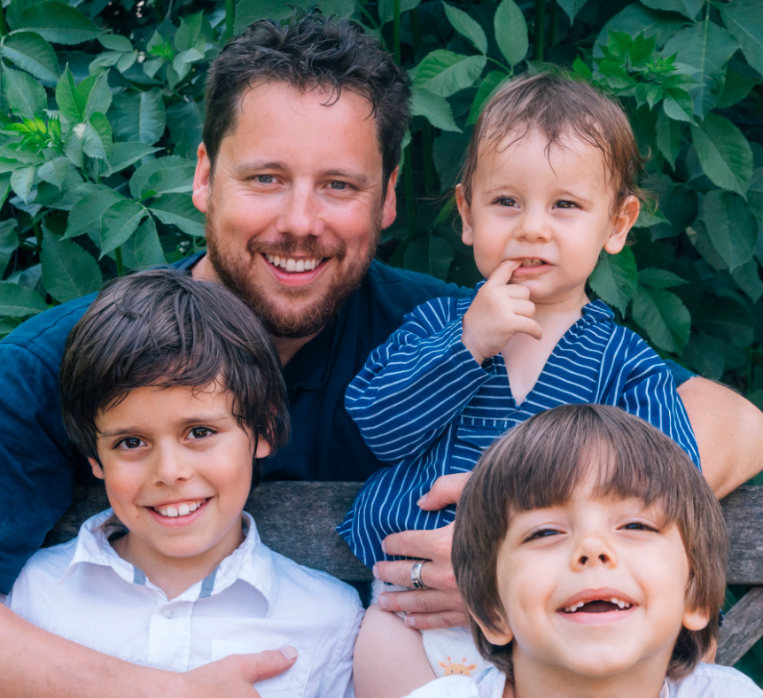
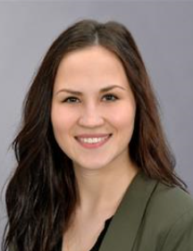

Betriebsratswahl 2018
Wer sind wir?
Die Personen der Liste 1 Zusammenhalt
|
Gerd Wierichs, 44 Jahre seit 18 Jahren bei EPLAN Vor 8 Jahren habe ich als Ersatzmitglied das erste mal in die Betriebsratsarbeit rein schnuppern dürfen. Ich entschied mich für mehr, um auch etwas bewegen zu könnenn. So wurde ich vor 4 Jahren Vollmidglied. Seit dem bin ich im Betriebsausschuss (dem geschäftsführenden Teil des Betriebsrates), im Wirtschaftsausschuss und zuständig für die Öffentlichkeitsarbeit. Gerade im Bereich "Öffentlichkeitsarbeit" ist mir sehr schnell bewusst geworden, dass es nicht nur vom Thema, sondern auch von der Meinung der anderen Betriebsratsmitglieder abhängt, was man veröffentlichen kann und darf. Bitte unterstützt uns dabei etwas mehr Offenheit in die Kommunikation zwischen Geschäftsführung, Betriebsrat und auch Euch Mitarbeitern zu bekommen! Offene Kommunikation ist DAS Mittel um den ZUSAMMENHALT zu fördern! |
|
Simone Spahn, 55 Jahre seit 17 Jahren bei EPLAN Ich habe mich vor 16 Jahren für den Betriebsrat entschieden, weil ich damals, so wie auch heute etwas bewirken möchte. Im Betriebsrat liegt mein Augenmerk seit mehr als 8 Jahren auf der Gesundheitsförderung am Arbeitsplatz, so wie auf den Verwaltungstätigkeiten (Protokoll, Mitarbeiterlisten usw.). Ich möchte, dass der ZUSAMMENHALT bei EPLAN trotz der Trennungen einiger Bereiche und der unterschiedlichen Standorte weiter bestehen bleibt. EPLAN zeichnet sich durch seine Mitarbeiter und deren ZUSAMMENHALT, sowie deren ZUSAMMENARBEIT aus. Dies muss erhalten bleiben. Nur so können Höhen und Tiefen überstanden werden. |
|

Stephan Medam Seit 10 Jahren bei EPLAN in der Auftragsbearbeitung. Seit 8 Jahren im Betriebsrat als Ersatzmitglied # 1 Sprecher des Wirtschaftsausschusses. Ich bin der Typ der Sachen anspricht und sich einbringt wenn er meint es könnte auch besser gehen. Mir ist es wichtig die Perspektive des Angestellten bei der Geschäftsführung in den Fokus zu bringen und das es einen Austausch zwischen Geschäftsführung und Betriebsrat gibt der für alle in der Firma positive Auswirkungen hat. Jeder Mitarbeiter ist wertvoll und hat seine eigenen Prioritäten und Lebensplanung. Jeder soll sich bei EPLAN wohlzufühlen. Die Geschäftsführung soll die Stimme der Mitarbeiter hören und dafür möchte ich mich als Euer Betriebsrat einsetzten. Da EPLAN ein wachsendes Unternehmen ist und wir auf sehr vielen Ebenen neue Strukturen schaffen und jeder neue Mitarbeiter den wir dazu gewinnen unbedingt behalten müssen, ist es mir auch wichtig das sich die neuen Kolleginnen und Kollegen gut aufgenommen fühlen und wirklich bei uns ankommen und bei uns bleiben. |
|
Andreas Krämer, 50 Jahre Seit fast 18 Jahren bei EPLAN Die letzte Amtsperiode des Betriebsrats war meine erste Amtszeit dort. Ich habe mich dabei als stellvertretender Protokollführer und im Bereich der technischen Neuerungen eingebracht. In den letzten Jahren hat sich in unserer Firma viel verändert. Wir sind stark gewachsen und der Arbeitsalltag ist viel durchorganisierter geworden. Die Taktung wird immer kürzer. Manchmal besteht dadurch die Gefahr, dass die soziale Komponente des Arbeitslebens darunter leidet. Ich möchte den ZUSAMMENHALT zwischen den Abteilungen und Standorten wieder stärker in den Vordergrund gerückt sehen. |
|
Göran Barz Ich arbeite seit zwanzig Jahren bei EPLAN, in den ersten Jahren als Auszubildender, seit 2001 als Software-Entwickler. Seit vier Jahren bin ich Ersatzmitglied im Betriebsrat. |
|

Mara Sophia Smiljanovski, 23 Jahre Ich bin seit knapp 2 Jahren bei EPLAN Ich habe mich für den Betriebsrat und damit für diese Truppe entschieden, weil ich als „jüngerer EPLANer“ noch viele Jahre bei EPLAN sein möchte und das geht nur, wenn von beiden Seiten eine Zufriedenheit herrscht. Zufriedenheit kann nur gewährleistet sein, wenn man die verschiedensten Themen sowie Probleme offen anspricht und diese zusammen löst. Zudem sehe ich manche Dinge vielleicht anders als ein „älterer EPLANer“ und da immer wieder neue EPLANer eingestellt werden, ist doch ein reibungsloses Miteinander zwischen Alt & Jung, berufserfahren & -unerfahren im Interesse aller EPLANer, oder nicht? Und das geht nur mit einem guten ehrlichen Austausch und ZUSAMMENHALT. (jüngerer EPLANer = bezogen auf das Alter &/oder noch nicht so lange bei EPLAN auml;lterer EPLANer = bezogen auf das Alter &/oder einige Jahre Betriebszughörigkeit) |
|
Thorsten Schirmer Ich arbeite seit 18 Jahren als Trainer / Dozent bei EPLAN. „Wer gehört werden will, muss reden“ hat Altbundeskanzler Helmut Schmidt einmal gesagt. Und Wer reden will, braucht eine Stimme. Ich möchte für die Belegschaft diese Stimme sein! Und dabei gilt für mich: Mitreden lohnt sich! |